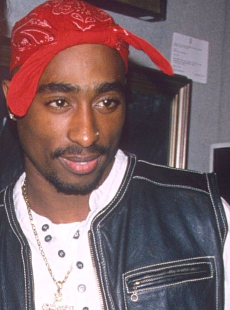
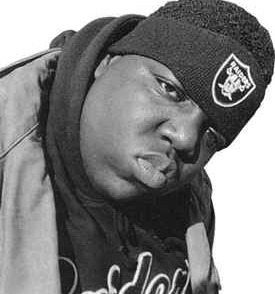

<html>
	<link
	href="style.css" type="text/css" rel="stylesheet">

	<body bgcolor="#78174C">
</html>
<center>
	<div class="button"/>
	<button> 
		<a href="index.html" class="button"> Home </a> 
	</button>
	<button> 
		<a href="newrap.html" class="button"> Facts in New Rap </a> 
	</button>
	<button>
		<a href="oldrap.html" class="button"> Facts in Old Rap </a> 
	</button>
	<button> 
		<a href="newbetter.html" class="button"> Why New rap is better </a> 
	</button>
	<button>
		<a href="accomplish.html" class="button"> How Rap Was Made </a> 
	</button>
	<br>
	
	<br>
	<font size="5" font face="verdana" color="Black">Tupac Shakur is one of the biggest rappers to live. He was part of the West Coast and East Coast beef. Him and the Rapper Biggie Smalls (The Notorious B.I.G.) were the main people during this rivalry. They started a beef when Tupac was shot five times and robbed November 30, 1994. He was in a recording studios lobby in Manhattan, New York. 
	</font>
	<br>
	
	<br>
	<font size="5" font face="verdana" color="Black">Biggie Smalls passed away on March 19, 1997. He was shot with diamond pierced bullets which made the bullets able to go straight through the truck to hit biggie. In his lifetime he made a netqorht of 20 million dollars and is still making millions to this day. Biggie Smalls is a very influential artist and for sure was one of the most popular to live. </font>
</center>

